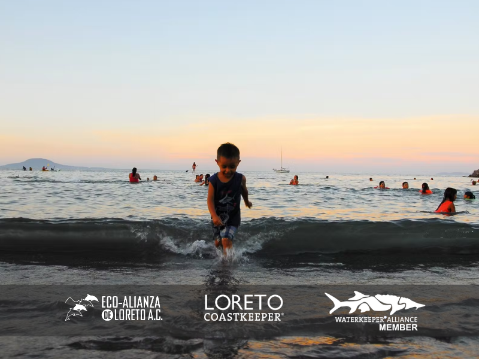
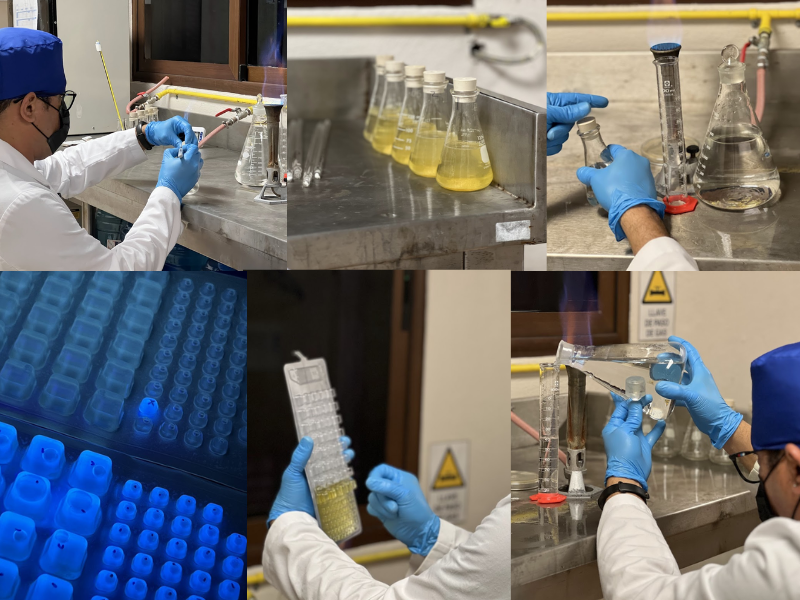
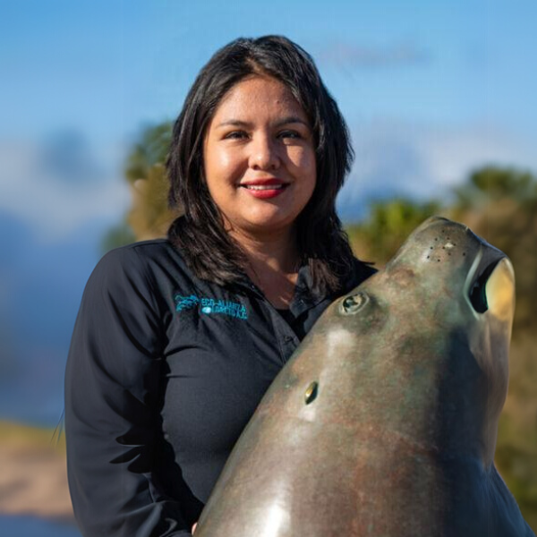

Proyecto de Eco-Alianza de Loreto
MONITOREO DE CALIDAD DE AGUA DE MAR
Analizamos, medimos y compartimos.
Descubre la información recopilada sobre la calidad del agua en las playas Loreto B.C.S.
Nosotros
¿Quienes Somos?
En Eco-Alianza de Loreto A.C., trabajamos con pasión por la conservación del medio ambiente y el bienestar de nuestra comunidad. Desde nuestra fundación, hemos impulsado proyectos que protegen los ecosistemas de Loreto, promoviendo la educación ambiental, la participación ciudadana y el desarrollo sustentable.
A través de diversas iniciativas, abordamos los principales desafíos ambientales de nuestra región. Algunos de nuestros proyectos más importantes son:
- Conservación de los Recursos Naturales
- Educación Ambiental
- Comunidades Participativas y Alianzas Estrategicas

Conoce la calidad del agua y ayuda a conservarla.
Explora los gráficos y conoce el estado del agua en nuestras playas
¿Cómo lo hacemos?
Conoce nuestro proceso de monitoreo de calidad del agua
Compromiso con la Calidad del Agua de mar
En Eco-Alianza de Loreto A.C., establecimos el programa Loreto CoastKeeper en 2012 con la misión de proteger los cuerpos de agua y playas recreativas de Loreto. Nuestro trabajo se basa en la recolección y análisis de datos para asegurar la seguridad y sostenibilidad del agua en la región.
Desde el inicio del programa Loreto CoastKeeper, hemos brindado una base científica confiable sobre el impacto de la contaminación microbiológica (Enterococos) en el Parque Nacional Bahía de Loreto.
Además, ofrecemos un servicio de salud pública a los usuarios del área natural protegida mediante la comunicación de nuestros resultados a través de nuestras redes sociales y la plataforma Swim Guide.

¿Qué Medimos en el Agua?
El Monitoreo de Calidad de Agua consiste en el muestreo, medición y registro de distintas características del agua de mar. Evaluamos parámetros clave que nos permiten conocer el estado del ecosistema marino, entre ellos:
- Temperatura
- Oxígeno disuelto
- Salinidad
- Conductividad eléctrica
- pH
Estos datos nos ayudan a identificar cambios en la calidad del agua y posibles riesgos para la vida marina y la salud pública.

Análisis Bacteriológico y Normativas
Nuestros estudios incluyen la medición de enterococos, bacterias indicadoras de contaminación fecal. Su presencia nos ayuda a determinar si el agua es segura para actividades recreativas.
Todos nuestros análisis siguen los lineamientos de la COFEPRIS, con el objetivo de garantizar que las playas de Loreto sean APTAS para contacto primario, como:
- Nadar
- Pescar
- Actividades Recreativas

Playas Bajo Monitoreo
Como parte de la WaterKeeper Alliance, llevamos a cabo un monitoreo continuo en 12 de las playas más importantes del Parque Nacional Bahía de Loreto:
- El Oasis
- El Cárcamo
- La Dársena
- La Negrita
- La Salinita
- Nopoló
- Juncalito
- El Quemado
- Ligüi
- Ensenada Blanca
- Mil Palmas
- La Pícazon
A través de estos esfuerzos, buscamos generar información confiable para la protección de estos espacios naturales.

Nuestro Equipo
Descubre a quienes lideran el Monitoreo de Calidad de Agua de mar

Priscila Conde
Coordinador de ProgramaMario Moreno
Encargado de Laboratorio
Andre Garayzar
Muestreador
Francisco Talamantes
Capitan de embarcaciónVisítanos en línea
Conoce más sobre Eco-Alianza de Loreto y sus proyectos